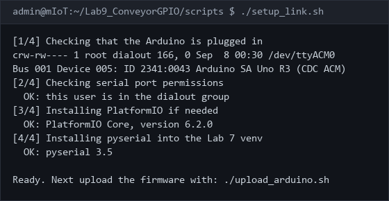
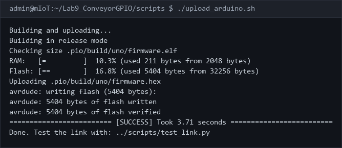
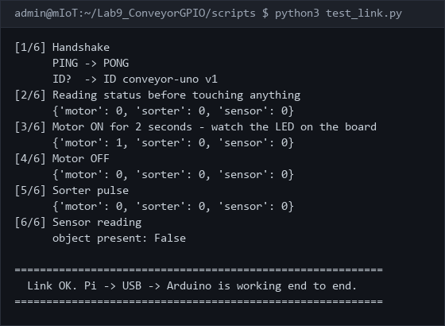
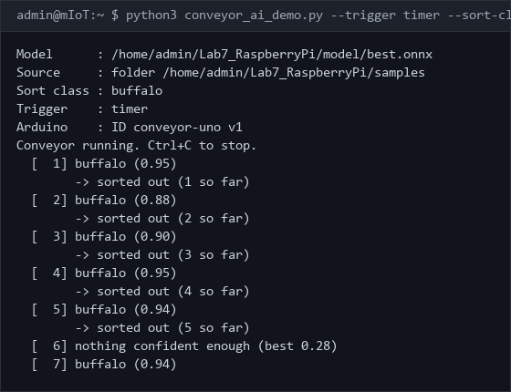

sleepbest.onnx อยู่บน Piถ้าคุณอ่านคู่มือ Raspberry Pi ทั่วไป จะเห็นเขาต่อมอเตอร์เข้าขา GPIO ของ Pi แล้วสั่งด้วย
gpiozero ซึ่งทำได้จริงและง่ายกว่านี้มาก แต่ในคอร์สนี้ทำแบบนั้นไม่ได้ ด้วยเหตุผล 2 ข้อ:
| เหตุผล | รายละเอียด |
|---|---|
| ขาไม่พอ | AI HAT ของ Lab 8 เสียบทับหัว GPIO ไปแล้ว ไม่เหลือขาให้ต่อ |
| Linux ไม่ใช่ระบบเรียลไทม์ | Pi ต้องรัน YOLO ที่กินซีพียูเต็มอยู่แล้ว ถ้าให้มันคุมจังหวะมอเตอร์ด้วย จังหวะจะเพี้ยนเมื่อระบบไปทำอย่างอื่น — Arduino ไม่มีระบบปฏิบัติการมาแย่ง จังหวะจึงแน่นอนกว่า |
เราเลยแบ่งงานกันใหม่:
Raspberry Pi 5 Arduino Uno -------------- ----------- กล้อง -> YOLO -> ตัดสินใจ ==USB serial==> ขับมอเตอร์ / อ่านเซ็นเซอร์ / ดันตัวคัดแยก "งานที่ต้องใช้สมอง" "งานที่ต้องตรงเวลา"
สองบอร์ดจะคุยกันด้วยข้อความบรรทัดต่อบรรทัด ไม่ใช่ไบต์ดิบ:
| Pi ส่งไป | Arduino ตอบ | ความหมาย |
|---|---|---|
PING | PONG | เช็คว่ายังคุยกันรู้เรื่อง |
ID? | ID conveyor-uno v1 | ถามว่าปลายสายเป็นบอร์ดอะไร เวอร์ชันไหน |
M1 / M0 | OK M1 | เดิน / หยุดสายพาน |
S1 / S0 | OK S1 | ดัน / ดึงตัวคัดแยกกลับ |
SENSOR? | SENSOR 0 | ถามค่าเซ็นเซอร์ตอนนี้ |
STATUS? | STATUS motor=0 sorter=0 sensor=0 | ถามสถานะทั้งหมดทีเดียว |
| — | EVENT OBJECT | Arduino ส่งเอง เมื่อเซ็นเซอร์เพิ่งเจอวัตถุ |
โค้ดคุมฮาร์ดแวร์ที่มือใหม่เขียน มักหน้าตาแบบนี้:
ser.write(b"M1\n") time.sleep(0.5) # เดาว่า 0.5 วินาทีน่าจะพอ ser.write(b"S1\n")
ปัญหาคือ sleep เป็นการเดา ถ้าเดาสั้นไปคำสั่งจะหาย ถ้าเดายาวไปก็ช้าโดยไม่จำเป็น
และที่แย่ที่สุดคือมันผิดเป็นบางครั้ง — วันที่ทดสอบผ่าน วันสาธิตจริงพัง แล้วหาสาเหตุไม่เจอ
ถ้าออกแบบให้ทุกคำสั่งต้องมีคำตอบ โค้ดจะกลายเป็น:
link.motor(True) # ส่ง M1 แล้วรอจนได้ OK M1 จริง ๆ ถึงจะไปบรรทัดถัดไป link.sorter(True)
ไม่มีการเดาเวลาเหลืออยู่เลย ถ้าไม่ได้คำตอบภายในเวลาที่กำหนด โปรแกรมจะฟ้องทันทีว่าคุยไม่รู้เรื่อง
แทนที่จะทำงานต่อไปแบบผิด ๆ — หลักการเดียวกับที่ Lab 7 ใส่ set -euo pipefail ในสคริปต์
อีกข้อคือทำไมต้องเป็นข้อความ ไม่ใช่ไบต์ — เพราะเปิด Serial Monitor พิมพ์ M1 ทดสอบเองได้เลย
ไม่ต้องเขียนโปรแกรมฝั่ง Pi ก่อน เวลาแยกปัญหาว่าพังฝั่งไหน จะแยกได้ในสิบวินาที
cd ~/Lab9_ConveyorGPIO/scripts chmod +x *.sh ./setup_link.sh

Arduino SA Uno R3 และ this user is in the dialout group| ขั้นตอน | ทำอะไร และทำไม |
|---|---|
[1/4] หา /dev/ttyACM0 | Arduino Uno เสียบ USB จะโผล่มาเป็นไฟล์นี้ ถ้าไม่มีแปลว่าสายหลวมหรือบอร์ดเสีย ไม่ต้องไปแก้โค้ด |
[2/4] กลุ่ม dialout | Linux ให้สิทธิ์เปิดพอร์ตอนุกรมเฉพาะคนในกลุ่มนี้ ถ้าไม่อยู่จะต้องใช้ sudo ทุกครั้ง ซึ่งไม่ควร |
[3/4] ติดตั้ง PlatformIO | ตัวคอมไพล์และอัปโหลดแบบบรรทัดคำสั่ง — ใช้แทน Arduino IDE ที่ต้องมีหน้าจอ |
[4/4] ติดตั้ง pyserial | ไลบรารีฝั่ง Python สำหรับเปิดพอร์ต ลงในvenv เดียวกับ Lab 7 ไม่ต้องสร้างใหม่ |
platformio.ini ที่ commit เข้า git ได้ เพื่อนในกลุ่มจึง build ได้ผลเหมือนกัน
โดยไม่ต้องมานั่งตั้งค่าใน IDE ให้ตรงกันทีละคน./upload_arduino.sh

| บรรทัด | บอกอะไร |
|---|---|
RAM: 10.3% (used 211 bytes from 2048) | บรรทัดที่ต้องจับตาที่สุด — Uno มี RAM แค่ 2 KB ถ้าใช้เกิน 70-80% โปรแกรมจะเริ่มมีอาการแปลก ๆ แบบไม่มี error (สาเหตุคือ stack ไปทับ heap) |
Flash: 16.8% (used 5404 bytes from 32256) | พื้นที่เก็บโปรแกรม เหลือเยอะ ยังเพิ่มฟีเจอร์ได้อีกมาก |
5404 bytes of flash verified | อ่านกลับมาเทียบแล้วตรง — เขียนสำเร็จจริง ไม่ใช่แค่ส่งไป |
~/Lab7_RaspberryPi/venv/bin/python test_link.py

| ผลที่เห็น | แปลว่า |
|---|---|
PING -> PONG | เปิดพอร์ตได้ ส่งได้ รับได้ — สามอย่างพร้อมกัน |
ID conveyor-uno v1 | ปลายสายคือ firmware ของเราจริง ไม่ใช่โปรแกรมเก่าที่ค้างอยู่ในบอร์ด |
{'motor': 1, ...} ตอนขั้นที่ 3 | Arduino ยืนยันสถานะที่เปลี่ยนไปจริง ไม่ใช่แค่รับคำสั่งไปเฉย ๆ |
object present: False | ถูกต้องเมื่อยังไม่ต่อเซ็นเซอร์ เพราะขาถูกดึงขึ้นด้วย pull-up ในตัว ทำให้อ่านได้ว่า "ไม่มีของ" |
conveyor_link.pydef open(self):
self.ser = serial.Serial(self.port, self.baud, timeout=self.timeout)
# เปิดพอร์ตแล้ว Uno จะรีเซ็ตตัวเองเสมอ (สาย DTR ไปดึงขา reset)
time.sleep(RESET_WAIT)
self.ser.reset_input_buffer()
def command(self, cmd, expect_prefix=None):
self.ser.write((cmd + "\n").encode("ascii"))
for _ in range(10):
reply = self._readline()
if not reply.startswith("EVENT"):
break
if reply.startswith("ERR"):
raise ConveyorError(f"Arduino rejected '{cmd}': {reply}")
| time.sleep(RESET_WAIT) | จุดที่คนพลาดกันมากที่สุดของ Arduino Uno — พอมีโปรแกรมเปิดพอร์ต บอร์ดจะรีบูตตัวเองทันที ถ้าส่งคำสั่งแรกเร็วเกินไป มันจะหายไปกับ bootloader แล้วคุณจะงงว่าทำไมคำสั่งแรกไม่ทำงาน แต่คำสั่งที่สองทำงาน |
| ข้าม EVENT | Arduino ส่ง EVENT OBJECT เองได้ทุกเมื่อ ถ้ามันแทรกเข้ามาตอนเรารอคำตอบ ต้องข้ามไปหาคำตอบจริง ไม่งั้นจะอ่านสลับกันไปทั้งโปรแกรม |
| raise เมื่อเจอ ERR | ให้พังเสียงดังดีกว่าทำงานต่อแบบผิด ๆ — หลักการเดียวกับที่ Lab 10 เคยกลืน error ด้วย 2>nul แล้วหาสาเหตุไม่เจอ |
| close() สั่ง M0 S0 | ปิดโปรแกรมแล้วต้องไม่ปล่อยให้มอเตอร์ค้างหมุน — เรื่องความปลอดภัยที่ต้องคิดตั้งแต่ออกแบบ ไม่ใช่มาเติมทีหลัง |
ทดสอบตรรกะทั้งวงด้วยภาพจากโฟลเดอร์ก่อน (ยังไม่ต้องมีของวางบนสายพาน):
~/Lab7_RaspberryPi/venv/bin/python conveyor_ai_demo.py \
--trigger timer --interval 1 \
--source ~/Lab7_RaspberryPi/samples \
--sort-class buffalo

| อาร์กิวเมนต์ | ทำไมต้องมี |
|---|---|
--trigger timer | ใช้เวลาแทนสัญญาณเซ็นเซอร์ ทำให้ไล่ดูตรรกะได้ตั้งแต่ยังไม่มีวงจร พอต่อเซ็นเซอร์แล้วเปลี่ยนเป็น sensor |
--source | ป้อนภาพจากโฟลเดอร์แทนกล้อง ทำให้ผลออกมาเหมือนเดิมทุกครั้ง เอาไว้ยืนยันว่าตรรกะถูก |
--sort-class | คลาสที่เจอแล้วให้ดันออก ต้องเป็นชื่อที่โมเดลรู้จักจริง — สคริปต์เตือนให้ถ้าใส่ชื่อที่ไม่มี |
--min-conf | เชื่อผลเมื่อมั่นใจเกินค่านี้เท่านั้น กันไม่ให้แขนกลทำงานจากการทายที่ไม่แน่ใจ |
ใน Lab 5 การทายผิดหนึ่งครั้งแค่ทำให้ตัวเลข mAP ลดลง แต่ใน Lab นี้ การทายผิดหนึ่งครั้งคือ แขนกลผลักของดีทิ้ง หรือปล่อยของเสียผ่านไป ราคาของความผิดพลาดไม่เท่ากันแล้ว
เพราะฉะนั้นการตั้งค่า MIN_CONFIDENCE ไม่ใช่เรื่องเทคนิค แต่เป็นการตัดสินใจเชิงธุรกิจ:
| ตั้งค่า | ผลที่ตามมา | เหมาะกับงานแบบไหน |
|---|---|---|
| ต่ำ (0.25) | จับได้เยอะ แต่ผลักของดีทิ้งบ่อย | ของเสียหลุดไปแล้วอันตราย เช่น คัดชิ้นส่วนเบรก |
| สูง (0.7) | ผลักของดีทิ้งน้อย แต่ปล่อยของเสียผ่านมากขึ้น | ของมีราคาแพง ทิ้งผิดแล้วเสียหายหนัก |
นี่คือ operating point ที่พูดถึงใน Lab 5 นั่นเอง — แต่คราวนี้เห็นราคาของมันเป็นของจริงที่จับต้องได้ ไม่ใช่แค่จุดบนกราฟ
| ขา Arduino | ต่อกับ | หมายเหตุ |
|---|---|---|
D4 | L298N IN1 | ทิศทางมอเตอร์ |
D5 | L298N IN2 | ทิศทางมอเตอร์ |
D9 | L298N ENA | ต้องเป็นขา PWM เพราะใช้คุมความเร็ว |
D2 | เซ็นเซอร์ IR (OUT) | เลือกขา 2 เพราะรองรับ interrupt ถ้าจะพัฒนาต่อ |
D8 | รีเลย์ของตัวคัดแยก | |
D13 | ไฟบนบอร์ด | สะท้อนสถานะมอเตอร์ ไม่ต้องต่ออะไร |
GND | GND ร่วมทุกตัว | ข้อนี้พลาดแล้วหาสาเหตุนานที่สุด — ดูกล่องแดงด้านล่าง |
ต่อวงจรเสร็จแล้วเช็คทีละชิ้นก่อนรันทั้งระบบ:
python3 test_link.py # มอเตอร์ต้องหมุนจริงตอนขั้นที่ 3 python3 test_sensor.py # เอามือบังหน้าเซ็นเซอร์ ค่าต้องเปลี่ยน python3 conveyor_ai_demo.py # ของจริงทั้งวง ใช้เซ็นเซอร์เป็นตัวสั่งงาน
SENSOR_ACTIVE_LOW
ใน arduino/src/main.cpp เป็น false แล้วอัปโหลดใหม่ — แก้ที่เดียวจบ ไม่ต้องไปกลับตรรกะทั้งโปรแกรม| อาการ / ข้อความที่ขึ้น | สาเหตุ | วิธีแก้ |
|---|---|---|
RuntimeError: Cannot determine SOC peripheral base address |
ลอง pip install RPi.GPIO แล้วใช้กับ Pi 5 — Pi 5 เปลี่ยนไปใช้ชิป RP1 คุม GPIO ไลบรารีตัวเดิมอ่านที่อยู่ฮาร์ดแวร์แบบเก่าไม่เจอ |
แล็บนี้ไม่ใช้ GPIO ของ Pi แล้ว ถ้าโปรเจคอื่นต้องใช้จริง ให้ลง python3-lgpio จาก apt แล้วสร้าง venv ด้วย --system-site-packages (ลง lgpio ผ่าน pip ตรง ๆ ไม่ได้ ต้องมี swig) |
| สคริปต์ค้างไม่มีอะไรออกจอเลยตอนต่อ pipe | Python พัก output ไว้ในบัฟเฟอร์เมื่อปลายทางไม่ใช่หน้าจอ พอโดนตัดจบก็หายไปทั้งก้อน | รันด้วย python3 -u เวลาจะเก็บ log |
| คำสั่งแรกไม่ทำงาน แต่คำสั่งที่สองทำงาน | Uno รีเซ็ตตัวเองทุกครั้งที่มีโปรแกรมเปิดพอร์ต คำสั่งแรกเลยหายไปกับ bootloader | รอราว 2 วินาทีหลังเปิดพอร์ตก่อนส่งคำสั่งแรก (RESET_WAIT ใน config.py ทำให้แล้ว) |
อัปโหลดไม่ได้ ค้างที่ avrdude |
มีโปรแกรมอื่นเปิดพอร์ตค้างอยู่ (Serial Monitor หรือสคริปต์เดโม) | ปิดโปรแกรมนั้นก่อน — upload_arduino.sh เช็คให้แล้วและบอกว่าโปรแกรมไหนถืออยู่ |
Cannot open /dev/ttyACM0: Permission denied |
ผู้ใช้ไม่ได้อยู่ในกลุ่ม dialout |
sudo usermod -aG dialout $USER แล้วออกจากระบบเข้าใหม่ (แค่เปิดเทอร์มินัลใหม่ไม่พอ) |
| สั่งคัดแยกแล้วไม่มีอะไรเกิดขึ้นเลย | SORT_CLASS เป็นชื่อคลาสที่โมเดลไม่รู้จัก |
สคริปต์เตือนให้ตั้งแต่ตอนเริ่มพร้อมพิมพ์รายชื่อคลาสที่โมเดลรู้จักออกมาให้ |
2341:0043) ต่อ USB ที่ /dev/ttyACM0,
PlatformIO Core 6.2.0, pyserial 3.5:
firmware ใช้ RAM 211 จาก 2048 ไบต์ (10.3%) และ Flash 5,404 จาก 32,256 ไบต์ (16.8%)
อัปโหลดครั้งแรก 70 วินาที (รวมโหลด toolchain) ครั้งต่อไป 3.7 วินาที
คำสั่งทุกตัวในโปรโตคอลตอบกลับถูกต้อง และเดโมทั้งวงรันจบด้วยภาพจริงจากชุด african-wildlife
โดยตรวจเจอ buffalo ที่ความมั่นใจ 0.75-0.95 และข้ามรอบที่มั่นใจ 0.28 อย่างถูกต้อง
ยังไม่ได้ทดสอบกับมอเตอร์ เซ็นเซอร์ และชุดสายพานจริง เพราะยังไม่มีอุปกรณ์test_link.py ที่ผ่านครบทุกขั้นsleep เดาเวลาMIN_CONFIDENCE สูงหรือต่ำ พร้อมเหตุผลจากโจทย์ ไม่ใช่ลอกค่าในคู่มือ